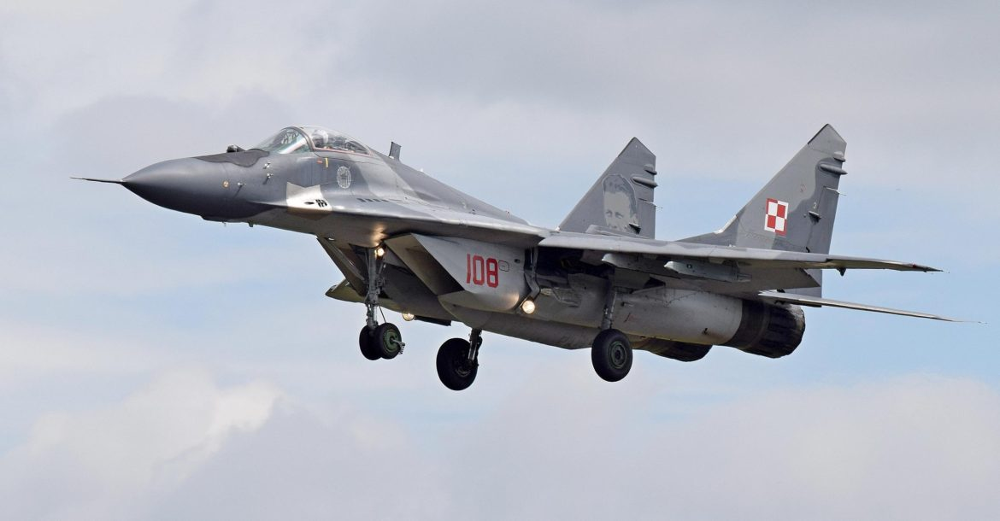

437-228-9087
rehalnavi.007@gmail.com
INDIAN AIR FORCE
The Indian Air Force (IAF) is the air arm of the Indian armed forces. Its complement of personnel and aircraft assets ranks fourth amongst the airforces of the world. Its primary mission is to secure Indian airspace and to conduct aerial warfare during armed conflict. It was officially established on 8 October 1932 as an auxiliary air force of the British Empire which honored India's aviation service during World War II with the prefix Royal.[8] After India gained independence from the United Kingdom in 1947, the name Royal Indian Air Force was kept and served in the name of Dominion of India. With the government's transition to a Republic in 1950, the prefix Royal was removed after only three years.
<
h2 style="font-size: 30px;color:red;margin-left:25px">History
Formation and early pilots
The Indian Air Force changed into hooked up on eight October 1932 in British India as an auxiliary air pressure[18] of the Royal Air Force. The enactment of the Indian Air Force Act 1932 stipulated out their auxiliary repute and enforced the adoption of the Royal Air Force uniforms, badges, brevets and insignia. On 1 April 1933, the IAF commissioned its first squadron, No.1 Squadron, with four Westland Wapiti biplanes and 5 Indian pilots. The Indian pilots had been led by means of British RAF Commanding officer Flight Lieutenant (later Air Vice Marshal) Cecil Bouchier.
World War II (1939–1945)
During the warfare,the IAF experienced a phase of constant expansion. New aircraft added to the fleet blanketed the US-constructed Vultee Vengeance, Douglas Dakota, the British Hawker Hurricane, Supermarine Spitfire, and Westland Lysander.
In reputation of the valiant provider via the IAF, King George VI conferred the prefix "Royal" in 1945. Thereafter the IAF become called the Royal Indian Air Force. In 1950, when India became a republic, the prefix was dropped and it reverted to being the Indian Air Force.
Bangladesh Liberation War (1971)
By late 1971, the intensification of the independence motion in erstwhile East Pakistan lead to the Bangladesh Liberation War between India and Pakistan.[47] On 22 November 1971, 10 days before the start of a full-scale struggle, four PAF F-86 Sabre jets attacked Indian and Mukti Bahini positions at Garibpur, close to the worldwide border. Two of the four PAF Sabres had been shot down and one broken by means of the IAF's Folland Gnats.[48] On three December, India officially declared war towards Pakistan following huge preemptive strikes by way of the PAF in opposition to Indian Air Force installations in Srinagar, Ambala, Sirsa, Halwara and Jodhpur. However, the IAF did no longer suffer considerably due to the fact the management had anticipated any such move and precautions were taken.[49] The Indian Air Force become quick to reply to Pakistani air moves, following which the PAF performed typically defensive sorties.
Within the primary two weeks, the IAF had achieved nearly 12,000 sorties over East Pakistan and additionally provided near air help to the advancing Indian Army.[51] IAF additionally assisted the Indian Navy in its operations towards the Pakistani Navy and Maritime Security Agency inside the Bay of Bengal and Arabian Sea. On the western the front, the IAF destroyed more than 20 Pakistani tanks,[52] 4 APCs and a supply educate all through the Battle of Longewala.[53] The IAF undertook strategic bombing of West Pakistan by using sporting out raids on oil installations in Karachi, the Mangla Dam and a gas plant in Sindh.[54]
Similar approach became also deployed in East Pakistan and as the IAF done whole air superiority at the eastern the front, the ordnance factories, runways, and other essential areas of East Pakistan were critically broken.[55] By the time Pakistani forces surrendered, the IAF destroyed ninety four PAF Aircraft[56] The IAF become able to behavior a huge variety of missions – troop assist; air combat; deep penetration strikes; para-losing in the back of enemy strains; feints to draw enemy opponents far from the real target; bombing; and reconnaissance. In comparison, the Pakistan Air Force, which became completely focused on air combat, become blown out of the subcontinent's skies within the first week of the war. Those PAF plane that survived took safe haven at Iranian air bases or in concrete bunkers, refusing to provide a combat.[57] Hostilities formally ended at 14:30 GMT on 17 December, after the fall of Dacca on 15 December. India claimed big profits of territory in West Pakistan (even though pre-war boundaries had been recognized after the war), and the independence of Pakistan's East wing as Bangladesh became confirmed. The IAF had flown over sixteen,000 sorties[51] on each East and West fronts; such as sorties with the aid of delivery aircraft and helicopters.[51] while the PAF flew about 30 and a pair of,840. More than 80 percent of the IAF's sorties had been close-support and interdiction, and in step with impartial assessments about forty five IAF Aircraft have been misplaced at the same time as, Pakistan misplaced 75 aircraft.
Kargil War (1999)
On eleven May 1999, the Indian Air Force was referred to as in to provide close air assist to the Indian Army at the height of the ongoing Kargil war with using helicopters. The IAF strike changed into code named Operation Safed Sagar. The first strikes had been released on 26 May, whilst the Indian Air Force struck infiltrator positions with fighter aircraft and helicopter gunships. The preliminary moves saw MiG-27s wearing out offensive sorties, with MiG-21s and later MiG-29s imparting fighter cowl. The IAF also deployed its radars and the MiG-29 opponents in considerable numbers to maintain take a look at on Pakistani army movements throughout the border. Srinagar Airport changed into at the moment closed to civilian air-visitors and devoted to the Indian Air Force.
On 27 May, the Indian Air Force suffered its first fatality whilst it misplaced a MiG-21 and a MiG-27 in brief succession. The following day, even as on an offensive sortie, a Mi-17 turned into shot down by means of 3 Stinger missiles and misplaced its entire team of 4. Following these losses the IAF at once withdrew helicopters from offensive roles as a measure in opposition to the chance of Man-transportable air-defence structures (MANPAD). On 30 May, the Mirage 2000s were introduced in offensive functionality, as they had been deemed higher in overall performance under the excessive-altitude situations of the war sector. Mirage 2000s had been not best higher ready to counter the MANPAD hazard compared to the MiGs, however also gave IAF the potential to carry out aerial raids at night. The MiG-29s were used appreciably to provide fighter escort to the Mirage 2000. Radar transmissions of Pakistani F-16s had been picked up again and again, but these aircraft stayed away. The Mirages correctly focused enemy camps and logistic bases in Kargil and seriously disrupted their deliver traces. Mirage 2000s had been used for strikes on Muntho Dhalo and the closely defended Tiger Hill and paved the manner for his or her early recapture. At the height of the war, the IAF was engaging in over forty sorties day by day over the Kargil location. By 26 July, the Indian forces had efficaciously repulsed the Pakistani forces from Kargil.
Commands
The Indian Air Force is split into 5 operational and two practical commands. Each Command is headed by way of an Air Officer Commanding-in-Chief with the rank of Air Marshal. The cause of an operational command is to conduct army operations the use of aircraft within its area of obligation, while the duty of practical commands is to keep combat readiness. Aside from the Training Command at Bangalore, the primary flight schooling is completed at the Air Force Academy, Dundigul (placed in Hyderabad), accompanied via operational education at various other colleges. Advanced officer schooling for command positions is also performed on the Defence Services Staff College; specialised advanced flight schooling faculties are placed at Bidar, Karnataka and Hakimpet, Telangana (also the place for helicopter education). Technical schools are found at some of different locations.
Training and education
The Indian Armed Forces have set up numerous military academies across India for training its personnel, such as the National Defence Academy (NDA). Besides the tri-service institutions, the Indian Air Force has a Training Command and several training establishments. While technical and other support staff are trained at various Ground Training Schools, the pilots are trained at the Air Force Academy, Dundigul (located in Hyderabad). The Pilot Training Establishment at Allahabad, the Air Force Administrative College at Coimbatore, the Institute of Aerospace Medicine at Bangalore, the Air Force Technical College, Bangalore at Jalahalli, the Tactics and Air Combat and Defence Establishment at Gwalior, and the Paratrooper's Training School at Agra are some of the other training establishments of the IAF.
Aircrafts
The Indian Air Force has plane and device of Russian (erstwhile Soviet Union), British, French, Israeli, US and Indian origins with Russian aircraft dominating its stock. HAL produces a number of the Russian and British aircraft in India beneath licence. The exact wide variety of plane in carrier with the Indian Air Force cannot be decided with precision from open sources. Various dependable sources provide significantly divergent estimates for a ramification of high-visibility plane. Flight International estimates there to be round 1,721 aircraft in service with the IAF. While the International Institute for Strategic Studies affords a comparable estimate of 1,724 plane. Both assets agree there are about 900 combat capable (fighter, assault and so on.) aircraft within the IAF.
Multi-role fighters and strike aircraft
Sukhoi Su-30MKI
The IAF's primary air superiority fighter with the additional capability to behavior air-ground (strike) missions is Sukhoi Su-30MKI. The IAF have placed an order for a total of 272 Su-30MKIs of which 242 are in service as of January 2016.
Mikoyan MiG-29
The Mikoyan MiG-29 referred to as Baaz (Hindi for Hawk) is a committed air superiority fighter and constitutes a 2nd line of defence after the Sukhoi Su-30MKI. 69 MiG-29s are in carrier, all of which have been currently upgraded to the MiG-29UPG trendy.

Dassault Mirage 2000
The Dassault Mirage 2000, known as Vajra (Sanskrit for Diamond or thunderbolt) in Indian provider, is the number one multirole fighter, the IAF currently operates 49 Mirage 2000Hs and 8 Mirage 2000 TH all of which are presently being upgraded to the Mirage 2000-five MK2 popular with Indian precise adjustments and a couple of Mirage 2000-5 MK2 are in carrier as of March 2015.
.. 45 Squadron IAF Flying Daggers was shaped on 1 July 2016 with two plane. Initially being stationed at Bangalore, the first squadron could be positioned at its domestic base at Sulur, Tamil Nadu. The Tejas will contain 40 aircraft of the MK1 variant and 83 of the MK1A variation. The latter may have an AESA radar, progressed EW match and internal adjustments for ease of renovation.

Tejas SEPECAT Jaguar
The SEPECAT Jaguar referred to as Shamsher serves because the IAF's primary ground attack pressure. The IAF currently operates 139 Jaguars. The first batch of DARIN-1 Jaguars are now going through a DARIN-three upgrade being equipped with EL/M-2052 AESA radars, and an progressed jamming suite plus new avionics.
Mikoyan MiG-27
The Mikoyan MiG-27 known as Bahadur (Hindi for Valiant) serves because the IAF's primary ground attack force. The IAF presently operates over eighty five MiG-27s. The type may be phased out quickly to account for growing serviceability issues and forty of them have been upgraded for stepped forward strike missions, along with laser designation and with self-protection jamming
Mikoyan-Gurevich MiG-21
The Mikoyan-Gurevich MiG-21 serves as an Interceptor plane within the IAF. The IAF have phased out most of its MiG-21s and plans to preserve handiest one hundred twenty five that have been upgraded to MiG-21 Bison widespread. These plane will be phased out among 2014 and 2017.
Structure
The President of India is the Supreme Commander of all Indian armed forces and by virtue of that fact is the national Commander-in-chief of the Air Force. The Chief of the Air Staff with the rank of air chief marshal is the Commander of the Indian Air Force.
| Post | Current Holder |
|---|---|
| Chief of the Air Staff | Air cheif MarshalBirender Singh Dhanoa |
| Vice Chief of the Air Staff | Air Marshal Anil Khosla |
| Deputy Chief of the Air Staff | Air Marshal V R Chaudhari |
| Air Officer in Charge of Administration | Air Marshal Pardeep Padmakar Bapat |
| Director General of inspection and Flight Safty | Air Marshal S Harpal Singh |
Go to top